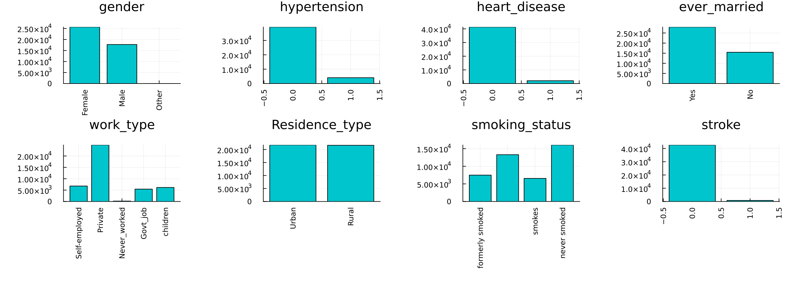

Balanced Bagging for Cerebral Stroke Prediction
import Pkg;
Pkg.add(["Random", "CSV", "DataFrames", "MLJ", "Imbalance", "MLJBalancing",
"ScientificTypes","Impute", "StatsBase", "Plots", "Measures", "HTTP"])
using Random
using CSV
using DataFrames
using MLJ
using Imbalance
using MLJBalancing
using StatsBase
using ScientificTypes
using Plots, Measures
using Impute
using HTTP: downloadLoading Data
In this example, we will consider the Cerebral Stroke Prediction Dataset found on Kaggle for the objective of predicting where a stroke has occurred given medical features about patients.
CSV gives us the ability to easily read the dataset after it's downloaded as follows
download("https://raw.githubusercontent.com/JuliaAI/Imbalance.jl/dev/docs/src/examples/cerebral_ensemble/cerebral.csv")
df = CSV.read("./cerebral.csv", DataFrame)
# Display the first 5 rows with DataFrames
first(df, 5) |> pretty┌───────┬─────────┬────────────┬──────────────┬───────────────┬──────────────┬──────────────┬────────────────┬───────────────────┬────────────────────────────┬──────────────────────────┬────────┐
│ id │ gender │ age │ hypertension │ heart_disease │ ever_married │ work_type │ Residence_type │ avg_glucose_level │ bmi │ smoking_status │ stroke │
│ Int64 │ String7 │ Float64 │ Int64 │ Int64 │ String3 │ String15 │ String7 │ Float64 │ Union{Missing, Float64} │ Union{Missing, String15} │ Int64 │
│ Count │ Textual │ Continuous │ Count │ Count │ Textual │ Textual │ Textual │ Continuous │ Union{Missing, Continuous} │ Union{Missing, Textual} │ Count │
├───────┼─────────┼────────────┼──────────────┼───────────────┼──────────────┼──────────────┼────────────────┼───────────────────┼────────────────────────────┼──────────────────────────┼────────┤
│ 30669 │ Male │ 3.0 │ 0 │ 0 │ No │ children │ Rural │ 95.12 │ 18.0 │ missing │ 0 │
│ 30468 │ Male │ 58.0 │ 1 │ 0 │ Yes │ Private │ Urban │ 87.96 │ 39.2 │ never smoked │ 0 │
│ 16523 │ Female │ 8.0 │ 0 │ 0 │ No │ Private │ Urban │ 110.89 │ 17.6 │ missing │ 0 │
│ 56543 │ Female │ 70.0 │ 0 │ 0 │ Yes │ Private │ Rural │ 69.04 │ 35.9 │ formerly smoked │ 0 │
│ 46136 │ Male │ 14.0 │ 0 │ 0 │ No │ Never_worked │ Rural │ 161.28 │ 19.1 │ missing │ 0 │
└───────┴─────────┴────────────┴──────────────┴───────────────┴──────────────┴──────────────┴────────────────┴───────────────────┴────────────────────────────┴──────────────────────────┴────────┘It's obvious that the id column is useless for predictions so we may as well drop it.
df = df[:, Not(:id)]
first(df, 5) |> pretty┌─────────┬────────────┬──────────────┬───────────────┬──────────────┬──────────────┬────────────────┬───────────────────┬────────────────────────────┬──────────────────────────┬────────┐
│ gender │ age │ hypertension │ heart_disease │ ever_married │ work_type │ Residence_type │ avg_glucose_level │ bmi │ smoking_status │ stroke │
│ String7 │ Float64 │ Int64 │ Int64 │ String3 │ String15 │ String7 │ Float64 │ Union{Missing, Float64} │ Union{Missing, String15} │ Int64 │
│ Textual │ Continuous │ Count │ Count │ Textual │ Textual │ Textual │ Continuous │ Union{Missing, Continuous} │ Union{Missing, Textual} │ Count │
├─────────┼────────────┼──────────────┼───────────────┼──────────────┼──────────────┼────────────────┼───────────────────┼────────────────────────────┼──────────────────────────┼────────┤
│ Male │ 3.0 │ 0 │ 0 │ No │ children │ Rural │ 95.12 │ 18.0 │ missing │ 0 │
│ Male │ 58.0 │ 1 │ 0 │ Yes │ Private │ Urban │ 87.96 │ 39.2 │ never smoked │ 0 │
│ Female │ 8.0 │ 0 │ 0 │ No │ Private │ Urban │ 110.89 │ 17.6 │ missing │ 0 │
│ Female │ 70.0 │ 0 │ 0 │ Yes │ Private │ Rural │ 69.04 │ 35.9 │ formerly smoked │ 0 │
│ Male │ 14.0 │ 0 │ 0 │ No │ Never_worked │ Rural │ 161.28 │ 19.1 │ missing │ 0 │
└─────────┴────────────┴──────────────┴───────────────┴──────────────┴──────────────┴────────────────┴───────────────────┴────────────────────────────┴──────────────────────────┴────────┘Visualize the Data
Since this dataset is composed mostly of categorical features, a bar chart for each categorical column is a good way to visualize the data.
# Create a bar chart for each column
bar_charts = []
for col in names(df)
counts = countmap(df[!, col])
k, v = collect(keys(counts)), collect(values(counts))
if length(k) < 20
push!(bar_charts, bar(k, v, legend=false, title=col, color="turquoise3", xrotation=90, margin=6mm))
end
end
# Combine bar charts into a grid layout with specified plot size
plot_res = plot(bar_charts..., layout=(3, 4),
size=(1300, 500),
dpi=200
)
savefig(plot_res, "./assets/cerebral-charts.png")

Our target her is the Stroke variable; notice how imbalanced it is.
Coercing Data
Typical models from MLJ assume that elements in each column of a table have some scientific type as defined by the ScientificTypes.jl package. It's often necessary to coerce the types found by default to the appropriate type.
ScientificTypes.schema(df)┌───────────────────┬────────────────────────────┬──────────────────────────┐
│ names │ scitypes │ types │
├───────────────────┼────────────────────────────┼──────────────────────────┤
│ gender │ Textual │ String7 │
│ age │ Continuous │ Float64 │
│ hypertension │ Count │ Int64 │
│ heart_disease │ Count │ Int64 │
│ ever_married │ Textual │ String3 │
│ work_type │ Textual │ String15 │
│ Residence_type │ Textual │ String7 │
│ avg_glucose_level │ Continuous │ Float64 │
│ bmi │ Union{Missing, Continuous} │ Union{Missing, Float64} │
│ smoking_status │ Union{Missing, Textual} │ Union{Missing, String15} │
│ stroke │ Count │ Int64 │
└───────────────────┴────────────────────────────┴──────────────────────────┘For instance, here we need to coerce all the data to Multiclass as they are all nominal variables except for Age, avg_glucose_level and bmi which we can treat as continuous
df = coerce(df, :gender => Multiclass, :age => Continuous, :hypertension => Multiclass,
:heart_disease => Multiclass, :ever_married => Multiclass, :work_type => Multiclass,
:Residence_type => Multiclass, :avg_glucose_level => Continuous,
:bmi => Continuous, :smoking_status => Multiclass, :stroke => Multiclass,
)
ScientificTypes.schema(df)┌───────────────────┬───────────────┬────────────────────────────────────┐
│ names │ scitypes │ types │
├───────────────────┼───────────────┼────────────────────────────────────┤
│ gender │ Multiclass{3} │ CategoricalValue{String7, UInt32} │
│ age │ Continuous │ Float64 │
│ hypertension │ Multiclass{2} │ CategoricalValue{Int64, UInt32} │
│ heart_disease │ Multiclass{2} │ CategoricalValue{Int64, UInt32} │
│ ever_married │ Multiclass{2} │ CategoricalValue{String3, UInt32} │
│ work_type │ Multiclass{5} │ CategoricalValue{String15, UInt32} │
│ Residence_type │ Multiclass{2} │ CategoricalValue{String7, UInt32} │
│ avg_glucose_level │ Continuous │ Float64 │
│ bmi │ Continuous │ Float64 │
│ smoking_status │ Multiclass{3} │ CategoricalValue{String15, UInt32} │
│ stroke │ Multiclass{2} │ CategoricalValue{Int64, UInt32} │
└───────────────────┴───────────────┴────────────────────────────────────┘As shown in the types, some columns have missing values we will impute them using simple random sampling as dropping their rows would mean that we lose a big chunk of the dataset.
df = Impute.srs(df); disallowmissing!(df)
first(df, 5) |> pretty┌───────────────────────────────────┬────────────┬─────────────────────────────────┬─────────────────────────────────┬───────────────────────────────────┬────────────────────────────────────┬───────────────────────────────────┬───────────────────┬────────────┬────────────────────────────────────┬─────────────────────────────────┐
│ gender │ age │ hypertension │ heart_disease │ ever_married │ work_type │ Residence_type │ avg_glucose_level │ bmi │ smoking_status │ stroke │
│ CategoricalValue{String7, UInt32} │ Float64 │ CategoricalValue{Int64, UInt32} │ CategoricalValue{Int64, UInt32} │ CategoricalValue{String3, UInt32} │ CategoricalValue{String15, UInt32} │ CategoricalValue{String7, UInt32} │ Float64 │ Float64 │ CategoricalValue{String15, UInt32} │ CategoricalValue{Int64, UInt32} │
│ Multiclass{3} │ Continuous │ Multiclass{2} │ Multiclass{2} │ Multiclass{2} │ Multiclass{5} │ Multiclass{2} │ Continuous │ Continuous │ Multiclass{3} │ Multiclass{2} │
├───────────────────────────────────┼────────────┼─────────────────────────────────┼─────────────────────────────────┼───────────────────────────────────┼────────────────────────────────────┼───────────────────────────────────┼───────────────────┼────────────┼────────────────────────────────────┼─────────────────────────────────┤
│ Male │ 3.0 │ 0 │ 0 │ No │ children │ Rural │ 95.12 │ 18.0 │ formerly smoked │ 0 │
│ Male │ 58.0 │ 1 │ 0 │ Yes │ Private │ Urban │ 87.96 │ 39.2 │ never smoked │ 0 │
│ Female │ 8.0 │ 0 │ 0 │ No │ Private │ Urban │ 110.89 │ 17.6 │ never smoked │ 0 │
│ Female │ 70.0 │ 0 │ 0 │ Yes │ Private │ Rural │ 69.04 │ 35.9 │ formerly smoked │ 0 │
│ Male │ 14.0 │ 0 │ 0 │ No │ Never_worked │ Rural │ 161.28 │ 19.1 │ formerly smoked │ 0 │
└───────────────────────────────────┴────────────┴─────────────────────────────────┴─────────────────────────────────┴───────────────────────────────────┴────────────────────────────────────┴───────────────────────────────────┴───────────────────┴────────────┴────────────────────────────────────┴─────────────────────────────────┘Unpacking and Splitting Data
Both MLJ and the pure functional interface of Imbalance assume that the observations table X and target vector y are separate. We can accomplish that by using unpack from MLJ
y, X = unpack(df, ==(:stroke); rng=123);
first(X, 5) |> pretty┌───────────────────────────────────┬────────────┬─────────────────────────────────┬─────────────────────────────────┬───────────────────────────────────┬────────────────────────────────────┬───────────────────────────────────┬───────────────────┬────────────┬────────────────────────────────────┐
│ gender │ age │ hypertension │ heart_disease │ ever_married │ work_type │ Residence_type │ avg_glucose_level │ bmi │ smoking_status │
│ CategoricalValue{String7, UInt32} │ Float64 │ CategoricalValue{Int64, UInt32} │ CategoricalValue{Int64, UInt32} │ CategoricalValue{String3, UInt32} │ CategoricalValue{String15, UInt32} │ CategoricalValue{String7, UInt32} │ Float64 │ Float64 │ CategoricalValue{String15, UInt32} │
│ Multiclass{3} │ Continuous │ Multiclass{2} │ Multiclass{2} │ Multiclass{2} │ Multiclass{5} │ Multiclass{2} │ Continuous │ Continuous │ Multiclass{3} │
├───────────────────────────────────┼────────────┼─────────────────────────────────┼─────────────────────────────────┼───────────────────────────────────┼────────────────────────────────────┼───────────────────────────────────┼───────────────────┼────────────┼────────────────────────────────────┤
│ Female │ 37.0 │ 0 │ 0 │ Yes │ Private │ Urban │ 103.66 │ 36.1 │ smokes │
│ Female │ 78.0 │ 0 │ 0 │ No │ Private │ Rural │ 83.97 │ 39.6 │ formerly smoked │
│ Female │ 2.0 │ 0 │ 0 │ No │ children │ Urban │ 98.66 │ 17.0 │ smokes │
│ Female │ 62.0 │ 0 │ 0 │ No │ Private │ Rural │ 205.41 │ 27.8 │ smokes │
│ Male │ 14.0 │ 0 │ 0 │ No │ Private │ Rural │ 118.18 │ 24.5 │ never smoked │
└───────────────────────────────────┴────────────┴─────────────────────────────────┴─────────────────────────────────┴───────────────────────────────────┴────────────────────────────────────┴───────────────────────────────────┴───────────────────┴────────────┴────────────────────────────────────┘Splitting the data into train and test portions is also easy using MLJ's partition function. stratify=y guarantees that the data is distributed in the same proportions as the original dataset in both splits which is more representative of the real world.
(X_train, X_test), (y_train, y_test) = partition(
(X, y),
0.8,
multi = true,
shuffle = true,
stratify = y,
rng = Random.Xoshiro(42)
)⚠️ Always split the data before oversampling. If your test data has oversampled observations then train-test contamination has occurred; novel observations will not come from the oversampling function.
Oversampling
It was obvious from the bar charts that there is a severe imbalance problem. Let's look at that again.
checkbalance(y) # comes from Imbalance1: ▇ 783 (1.8%)
0: ▇▇▇▇▇▇▇▇▇▇▇▇▇▇▇▇▇▇▇▇▇▇▇▇▇▇▇▇▇▇▇▇▇▇▇▇▇▇▇▇▇▇▇▇▇▇▇▇▇▇ 42617 (100.0%)Indeed, may be too severe for most models.
Training the Model
Because we have scientific types setup, we can easily check what models will be able to train on our data. This should guarantee that the model we choose won't throw an error due to types after feeding it the data.
ms = models(matching(Xover, yover))6-element Vector{NamedTuple{(:name, :package_name, :is_supervised, :abstract_type, :deep_properties, :docstring, :fit_data_scitype, :human_name, :hyperparameter_ranges, :hyperparameter_types, :hyperparameters, :implemented_methods, :inverse_transform_scitype, :is_pure_julia, :is_wrapper, :iteration_parameter, :load_path, :package_license, :package_url, :package_uuid, :predict_scitype, :prediction_type, :reporting_operations, :reports_feature_importances, :supports_class_weights, :supports_online, :supports_training_losses, :supports_weights, :transform_scitype, :input_scitype, :target_scitype, :output_scitype)}}:
(name = CatBoostClassifier, package_name = CatBoost, ... )
(name = ConstantClassifier, package_name = MLJModels, ... )
(name = DecisionTreeClassifier, package_name = BetaML, ... )
(name = DeterministicConstantClassifier, package_name = MLJModels, ... )
(name = OneRuleClassifier, package_name = OneRule, ... )
(name = RandomForestClassifier, package_name = BetaML, ... )Let's go for a DecisionTreeClassifier
import Pkg; Pkg.add("BetaML") Resolving package versions...
Installed MLJBalancing ─ v0.1.0
Updating `~/Documents/GitHub/Imbalance.jl/docs/Project.toml`
[45f359ea] + MLJBalancing v0.1.0
Updating `~/Documents/GitHub/Imbalance.jl/docs/Manifest.toml`
[45f359ea] + MLJBalancing v0.1.0
Precompiling project...
✓ MLJBalancing
1 dependency successfully precompiled in 25 seconds. 262 already precompiled.Load and Construct
# 1. Load the model
DecisionTreeClassifier = @load DecisionTreeClassifier pkg=BetaML
# 2. Instantiate it
model = DecisionTreeClassifier(max_depth=4)import BetaML ✔
┌ Info: For silent loading, specify `verbosity=0`.
└ @ Main /Users/essam/.julia/packages/MLJModels/EkXIe/src/loading.jl:159
DecisionTreeClassifier(
max_depth = 4,
min_gain = 0.0,
min_records = 2,
max_features = 0,
splitting_criterion = BetaML.Utils.gini,
rng = Random._GLOBAL_RNG())Wrap in a machine and fit!
# 3. Wrap it with the data in a machine
mach = machine(model, X_train, y_train)
# 4. fit the machine learning model
fit!(mach, verbosity=0)trained Machine; caches model-specific representations of data
model: DecisionTreeClassifier(max_depth = 4, …)
args:
1: Source @245 ⏎ Table{Union{AbstractVector{Continuous}, AbstractVector{Multiclass{5}}, AbstractVector{Multiclass{2}}, AbstractVector{Multiclass{3}}}}
2: Source @251 ⏎ AbstractVector{Multiclass{2}}Evaluate the Model
y_pred = MLJ.predict_mode(mach, X_test)
score = round(balanced_accuracy(y_pred, y_test), digits=2)0.5Training BalancedBagging Model
The results suggest that the model is just as good as random guessing. Let's see if this gets better by using a BalancedBaggingClassifier. This classifier trains T of the given model on T undersampled versions of the dataset where in each undersampled version there are as much majority examples as there are minority examples.
This approach can allow us to workaround the imbalance issue without losing any data. For instance, if we set T=Int(100/1.8) (which is the default) then on average all majority examples will be used in one of the T bags.
Load and Construct
bagging_model = BalancedBaggingClassifier(model=model, T=30, rng=Random.Xoshiro(42))BalancedBaggingClassifier(
model = DecisionTreeClassifier(
max_depth = 4,
min_gain = 0.0,
min_records = 2,
max_features = 0,
splitting_criterion = BetaML.Utils.gini,
rng = Random._GLOBAL_RNG()),
T = 30,
rng = Xoshiro(0xa379de7eeeb2a4e8, 0x953dccb6b532b3af, 0xf597b8ff8cfd652a, 0xccd7337c571680d1))Wrap in a machine and fit!
# 3. Wrap it with the data in a machine
mach_over = machine(bagging_model, X_train, y_train)
# 4. fit the machine learning model
fit!(mach_over, verbosity=0)trained Machine; does not cache data
model: BalancedBaggingClassifier(model = DecisionTreeClassifier(max_depth = 4, …), …)
args:
1: Source @005 ⏎ Table{Union{AbstractVector{Continuous}, AbstractVector{Multiclass{5}}, AbstractVector{Multiclass{2}}, AbstractVector{Multiclass{3}}}}
2: Source @531 ⏎ AbstractVector{Multiclass{2}}Evaluate the Model
y_pred = MLJ.predict_mode(mach_over, X_test)
score = round(balanced_accuracy(y_pred, y_test), digits=2)0.77This is a dramatic improvement over what we had before. Let's confirm with cross-validation.
cv=CV(nfolds=10)
evaluate!(mach_over, resampling=cv, measure=balanced_accuracy, operation=predict_mode) Evaluating over 10 folds: 100%[=========================] Time: 0:01:40[K
PerformanceEvaluation object with these fields:
model, measure, operation, measurement, per_fold,
per_observation, fitted_params_per_fold,
report_per_fold, train_test_rows, resampling, repeats
Extract:
┌─────────────────────┬──────────────┬─────────────┬─────────┬──────────────────
│ measure │ operation │ measurement │ 1.96*SE │ per_fold ⋯
├─────────────────────┼──────────────┼─────────────┼─────────┼──────────────────
│ BalancedAccuracy( │ predict_mode │ 0.772 │ 0.0146 │ [0.738, 0.769, ⋯
│ adjusted = false) │ │ │ │ ⋯
└─────────────────────┴──────────────┴─────────────┴─────────┴──────────────────
1 column omittedUnder the normality of scores, the 95% confidence interval is 77.2±1.4% for the balanced accuracy.